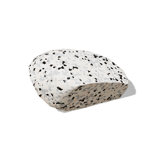
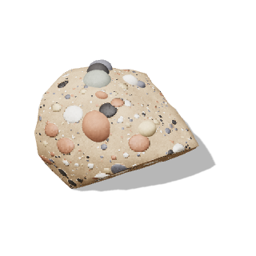
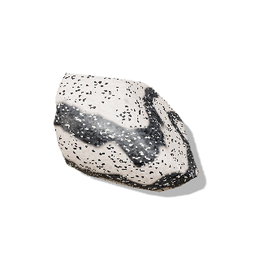

같은 재료를 써도 요리 방법에 따라 음식의 종류가 달라지는 것처럼, 암석도 생성 과정에 따라 분류할 수 있어요.
① 암석의 종류② 화성암③ 퇴적암④ 변성암
이번 시간에 나는! · 지각을 이루는 암석을 생성 과정에 따라 분류할 수 있다.
탐구에서 관찰할 암석 표본 (3D 모형 · 손가락으로 돌려 보세요)
3D 그림을 불러오지 못했어요. 인터넷 연결을 확인해 주세요.
읽기 ① 약 3분
암석은 생성 과정에 따라 나눠요
같은 재료를 써도 요리 방법에 따라 구이나 찜, 튀김 등 음식의 종류가 달라지는 것처럼, 암석도 생성 과정에 따라 분류할 수 있어요. 암석의 종류에는 마그마가 식어서 생긴 화성암, 퇴적물이 쌓여서 만들어진 퇴적암, 원래 있던 암석이 높은 열과 압력을 받아 성질이 변하여 생긴 변성암이 있어요.

화성암가 식어서 생긴 암석전남 해남 두륜산

퇴적암퇴적물이 쌓여서 만들어진 암석정선 봉양리

변성암원래 있던 암석이 높은 열과 압력을 받아 성질이 변하여 생긴 암석경기도 가평 명지 계곡
각 칸 아래는 교과서에 실린, 그 암석으로 이루어진 우리나라 지형이에요. (그림은 3D 모형)
이런 다양한 암석은 지권의 층상 구조에서 가장 바깥층인 을 이뤄요. 우리나라 곳곳에서도 화성암이나 퇴적암, 변성암으로 이루어진 지형을 만날 수 있어요.
생각 멈춤: 암석을 화성암, 퇴적암, 변성암으로 나누는 기준은 무엇일까요?눌러서 확인
암석이 만들어진 과정(생성 과정)이에요. 마그마가 식어서 생겼는지, 퇴적물이 쌓여서 생겼는지, 원래 있던 암석이 열과 압력을 받아 변했는지에 따라 나눠요.
읽기 ② 약 4분
마그마가 식어서 생긴 화성암
지하 깊은 곳에서 암석이 녹아 만들어진 가 지표로 흘러나와 굳거나 지하에서 식어 굳으면 암석이 되는데, 이를 화성암이라고 해요.
입자 크기
이때 마그마가 지표로 분출하여 빠르게 식으면 광물 입자의 크기가 매우 작은 암석이 돼요. 이 암석을 이라고 하며, 대표적인 화산암에는 현무암과 유문암이 있어요. 반면 마그마가 지하 깊은 곳에서 천천히 식으면 광물 입자의 크기가 큰 암석이 돼요. 이렇게 만들어진 화성암을 이라고 하며, 대표적으로 화강암과 반려암이 있어요.
암석의 색
화성암은 암석의 색에 따라 구분할 수도 있어요. 화강암과 유문암은 석영과 장석 등 밝은색 광물이 많아 암석의 색이 밝아요. 하지만 반려암과 현무암에는 감람석, 휘석 등 어두운색 광물이 많아 암석의 색이 어두워요.
버튼을 눌러 입자를 가까이 비교해 보세요
3D 그림을 불러오지 못했어요.
그림 ① 화성암의 종류: 가로는 암석의 색, 세로는 입자 크기 (교과서 그림 Ⅱ-5를 3D 모형으로)
내용: 중학교 과학 2 교과서 Ⅱ. 지권의 변화 「암석의 종류는 어떻게 구분할까?」(그림 Ⅱ-5 화성암의 종류, 그림 Ⅱ-6 퇴적암의 생성 과정, 그림 Ⅱ-7 퇴적암의 종류, 그림 Ⅱ-8 엽리의 형성 과정, 그림 Ⅱ-9 변성암의 종류, 탐구 '암석을 관찰하여 분류하기')
3D 암석은 사진이 아니라 실제 표본의 생김새(색, 알갱이 크기, 줄무늬, 둥근 자갈)를 참고해 three.js로 만든 모형이에요. 표본마다 실제 생김새는 조금씩 달라요.